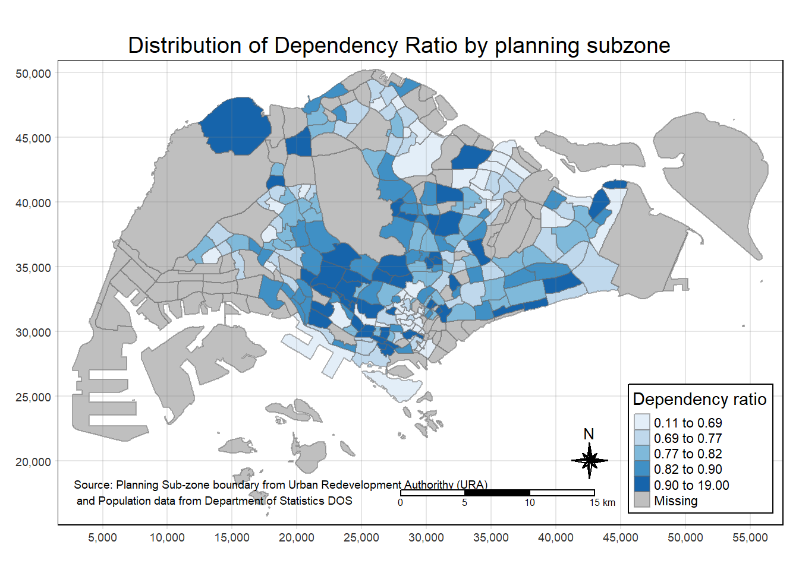
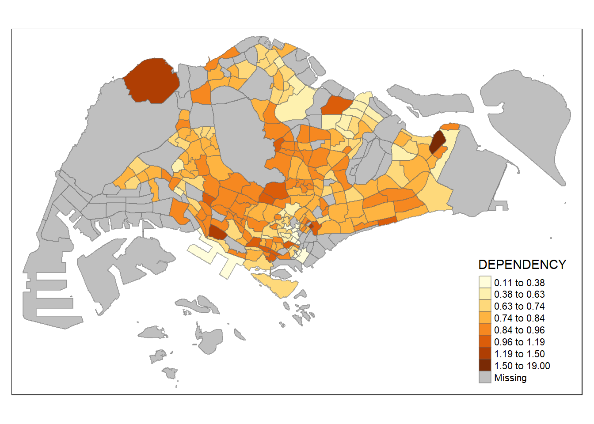
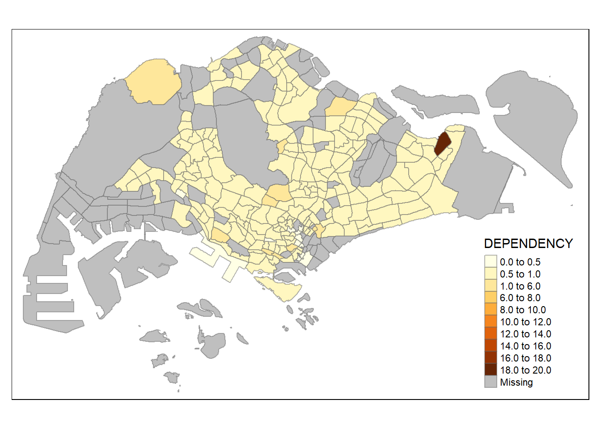

Hands-on Exercise 16 (Week 8: Choropleth Map)
18.1 Overview
Choropleth mapping involves the symbolisation of enumeration units, such as countries, provinces, states, counties or census units, using area patterns or graduated colors. For example, a social scientist may need to use a choropleth map to portray the spatial distribution of aged population of Singapore by Master Plan 2014 Subzone Boundary.
In this chapter, you will learn how to plot functional and truthful choropleth maps by using an R package called tmap package.
18.2 Getting Started
In this hands-on exercise, the key R package use is tmap package in R. Tmaps stands for thematic maps. Beside tmap package, four other R packages will be used. They are:
Among the four packages, readr, tidyr and dplyr are part of tidyverse package.
The code chunk below will be used to install and load these packages in RStudio.
We only have to install tidyverse instead of readr, tidyr and dplyr individually.
18.3.1 The Data
Two data set will be used to create the choropleth map. They are:
Master Plan 2014 Subzone Boundary (Web) (i.e.
MP14_SUBZONE_WEB_PL) in ESRI shapefile format. It can be downloaded at data.gov.sg This is a geospatial data. It consists of the geographical boundary of Singapore at the planning subzone level. The data is based on URA Master Plan 2014.Singapore Residents by Planning Area / Subzone, Age Group, Sex and Type of Dwelling, June 2011-2020 in csv format (i.e.
respopagesextod2011to2020.csv). This is an aspatial data file. It can be downloaded at Department of Statistics, Singapore Although it does not contain any coordinates values, but it’sPAandSZ(FK) fields can be used as unique identifiers to geocode toMP14_SUBZONE_WEB_PLshapefile (SUBZONE_Nas join key). Aim to getgeometrycolumn from shapefile.
18.3.2 Importing Geospatial Data into R
The code chunk below uses the st_read() function of sf package to import MP14_SUBZONE_WEB_PL shapefile into R as a simple feature data frame called mpsz.
dsn : destination folder (A collection of files that sf function needs to read geospatial stuff)
layer: data file (do not need to state the extension) sf will automatically use the appropriate drivers. See below. For instance, sf will know that the projected crs is SVY21.
Reading layer `MP14_SUBZONE_WEB_PL' from data source
`C:\yixin-neo\ISSS608-VAA\Hands-on_Ex\Hands-on_Ex16\data\geospatial'
using driver `ESRI Shapefile'
Simple feature collection with 323 features and 15 fields
Geometry type: MULTIPOLYGON
Dimension: XY
Bounding box: xmin: 2667.538 ymin: 15748.72 xmax: 56396.44 ymax: 50256.33
Projected CRS: SVY21mpsz is a sf object but in a dataframe format. It has a geometry field at the back, it contains coordinate pairs of polygons. Each value of geometry column is a list. We can use tidyverse functions to manipulate mpsz.
During joins, to retain geospatial properties, make sure the sf object in the left table of a left join.
To examine the content of mpsz,
under geometry type there could be :
mutlipolygon
multistring
point
Simple feature collection with 5 features and 15 fields
Geometry type: MULTIPOLYGON
Dimension: XY
Bounding box: xmin: 25867.68 ymin: 28369.47 xmax: 32362.39 ymax: 30435.54
Projected CRS: SVY21
OBJECTID SUBZONE_NO SUBZONE_N SUBZONE_C CA_IND PLN_AREA_N
1 1 1 MARINA SOUTH MSSZ01 Y MARINA SOUTH
2 2 1 PEARL'S HILL OTSZ01 Y OUTRAM
3 3 3 BOAT QUAY SRSZ03 Y SINGAPORE RIVER
4 4 8 HENDERSON HILL BMSZ08 N BUKIT MERAH
5 5 3 REDHILL BMSZ03 N BUKIT MERAH
PLN_AREA_C REGION_N REGION_C INC_CRC FMEL_UPD_D X_ADDR
1 MS CENTRAL REGION CR 5ED7EB253F99252E 2014-12-05 31595.84
2 OT CENTRAL REGION CR 8C7149B9EB32EEFC 2014-12-05 28679.06
3 SR CENTRAL REGION CR C35FEFF02B13E0E5 2014-12-05 29654.96
4 BM CENTRAL REGION CR 3775D82C5DDBEFBD 2014-12-05 26782.83
5 BM CENTRAL REGION CR 85D9ABEF0A40678F 2014-12-05 26201.96
Y_ADDR SHAPE_Leng SHAPE_Area geometry
1 29220.19 5267.381 1630379.3 MULTIPOLYGON (((31495.56 30...
2 29782.05 3506.107 559816.2 MULTIPOLYGON (((29092.28 30...
3 29974.66 1740.926 160807.5 MULTIPOLYGON (((29932.33 29...
4 29933.77 3313.625 595428.9 MULTIPOLYGON (((27131.28 30...
5 30005.70 2825.594 387429.4 MULTIPOLYGON (((26451.03 30...18.3.3 Importing Attribute Data into R
Next, we will import respopagsex2011to2020.csv file into RStudio and save the file into an R dataframe called popagsex. <-- aspatial file
The task will be performed by using read_csv() function of readr package as shown in the code chunk below.
Rows: 984,656
Columns: 7
$ PA <chr> "Ang Mo Kio", "Ang Mo Kio", "Ang Mo Kio", "Ang Mo Kio", "Ang Mo K…
$ SZ <chr> "Ang Mo Kio Town Centre", "Ang Mo Kio Town Centre", "Ang Mo Kio T…
$ AG <chr> "0_to_4", "0_to_4", "0_to_4", "0_to_4", "0_to_4", "0_to_4", "0_to…
$ Sex <chr> "Males", "Males", "Males", "Males", "Males", "Males", "Males", "M…
$ TOD <chr> "HDB 1- and 2-Room Flats", "HDB 3-Room Flats", "HDB 4-Room Flats"…
$ Pop <dbl> 0, 10, 30, 50, 0, 0, 40, 0, 0, 10, 30, 60, 0, 0, 40, 0, 0, 10, 30…
$ Time <dbl> 2011, 2011, 2011, 2011, 2011, 2011, 2011, 2011, 2011, 2011, 2011,…18.3.4 Data Preparation
Before a thematic map can be prepared, you are required to prepare a data table with year 2020 values. The data table should include the variables PA, SZ, YOUNG, ECONOMY ACTIVE, AGED, TOTAL, DEPENDENCY.
YOUNG: age group 0 to 4 until age groyup 20 to 24,
ECONOMY ACTIVE: age group 25-29 until age group 60-64,
AGED: age group 65 and above,
TOTAL: all age group, and
DEPENDENCY: the ratio between young and aged against economy active group
18.3.4.1 Data wrangling
The following data wrangling and transformation functions will be used:
pivot_wider()of tidyr package, andmutate(),filter(),group_by()andselect()of dplyr package
[1] "0_to_4" "5_to_9" "10_to_14" "15_to_19" "20_to_24"
[6] "25_to_29" "30_to_34" "35_to_39" "40_to_44" "45_to_49"
[11] "50_to_54" "55_to_59" "60_to_64" "65_to_69" "70_to_74"
[16] "75_to_79" "80_to_84" "85_to_89" "90_and_over"Show the code
| PA | SZ | AG | POP |
|---|---|---|---|
| Ang Mo Kio | Ang Mo Kio Town Centre | 0_to_4 | 170 |
| Ang Mo Kio | Ang Mo Kio Town Centre | 10_to_14 | 280 |
| Ang Mo Kio | Ang Mo Kio Town Centre | 15_to_19 | 340 |
| Ang Mo Kio | Ang Mo Kio Town Centre | 20_to_24 | 270 |
| Ang Mo Kio | Ang Mo Kio Town Centre | 25_to_29 | 260 |
Show the code
popdata2020 <- popdata %>%
filter(Time == 2020) %>%
group_by(PA,SZ,AG ) %>% #<<< to calculate sum of population of each combinatin of PA, SZ and AG
summarise (POP = sum(Pop)) %>% #<< at this point, we only have four columns (PA, SZ, AG, POP)
ungroup() %>% #<<< ungroup to release the grouping and continue with other wrangling
pivot_wider(names_from = AG,
values_from = POP)
kable(head(popdata2020,5))| PA | SZ | 0_to_4 | 10_to_14 | 15_to_19 | 20_to_24 | 25_to_29 | 30_to_34 | 35_to_39 | 40_to_44 | 45_to_49 | 50_to_54 | 55_to_59 | 5_to_9 | 60_to_64 | 65_to_69 | 70_to_74 | 75_to_79 | 80_to_84 | 85_to_89 | 90_and_over |
|---|---|---|---|---|---|---|---|---|---|---|---|---|---|---|---|---|---|---|---|---|
| Ang Mo Kio | Ang Mo Kio Town Centre | 170 | 280 | 340 | 270 | 260 | 310 | 330 | 400 | 480 | 380 | 310 | 230 | 290 | 250 | 240 | 130 | 100 | 30 | 10 |
| Ang Mo Kio | Cheng San | 1060 | 1040 | 1160 | 1330 | 1720 | 2020 | 2150 | 2080 | 2200 | 2050 | 2130 | 1050 | 2110 | 2180 | 1750 | 960 | 650 | 340 | 170 |
| Ang Mo Kio | Chong Boon | 850 | 1020 | 1070 | 1310 | 1610 | 1890 | 1720 | 1810 | 1820 | 1900 | 2100 | 850 | 2150 | 2100 | 1800 | 1120 | 800 | 430 | 220 |
| Ang Mo Kio | Kebun Bahru | 680 | 960 | 1010 | 1170 | 1410 | 1420 | 1440 | 1630 | 1810 | 1720 | 1800 | 800 | 1780 | 1710 | 1450 | 830 | 630 | 350 | 150 |
| Ang Mo Kio | Sembawang Hills | 210 | 400 | 450 | 500 | 500 | 340 | 300 | 370 | 550 | 540 | 550 | 320 | 480 | 410 | 360 | 230 | 150 | 100 | 60 |
Show the code
popdata2020 <- popdata %>%
filter(Time == 2020) %>%
group_by(PA,SZ,AG ) %>% #<<< to calculate sum of population of each combinatin of PA, SZ and AG
summarise (POP = sum(Pop)) %>% #<< at this point, we only have four columns (PA, SZ, AG, POP)
ungroup() %>% #<<< ungroup to release the grouping and continue with other wrangling
pivot_wider(names_from = AG,
values_from = POP) %>%
mutate(YOUNG = rowSums(.[3:6]) + rowSums(.[12])) %>%
mutate(`ECONOMY ACTIVE` = rowSums(.[7:11]) +
rowSums(.[13:15])) %>%
mutate(AGED = rowSums(.[16:21])) %>%
mutate(TOTAL = rowSums(.[3:21])) %>%
mutate(DEPENDENCY = (YOUNG + AGED) / `ECONOMY ACTIVE`) %>%
select(PA, SZ, YOUNG,
`ECONOMY ACTIVE`, AGED,
TOTAL, DEPENDENCY)
kable(head(popdata2020,5)) | PA | SZ | YOUNG | ECONOMY ACTIVE | AGED | TOTAL | DEPENDENCY |
|---|---|---|---|---|---|---|
| Ang Mo Kio | Ang Mo Kio Town Centre | 1440 | 2610 | 760 | 4810 | 0.8429119 |
| Ang Mo Kio | Cheng San | 6640 | 15460 | 6050 | 28150 | 0.8208279 |
| Ang Mo Kio | Chong Boon | 6150 | 13950 | 6470 | 26570 | 0.9046595 |
| Ang Mo Kio | Kebun Bahru | 5540 | 12090 | 5120 | 22750 | 0.8817204 |
| Ang Mo Kio | Sembawang Hills | 2100 | 3410 | 1310 | 6820 | 1.0000000 |
18.3.4.2 Joining the attribute data and geospatial data
Before we can perform the georelational join, one extra step is required to convert the values in PA and SZ fields to uppercase. This is because the values of PA and SZ fields are made up of upper- and lowercase. On the other, hand the SUBZONE_N and PLN_AREA_N are in uppercase.
mutate_atfunction: This function is used to modify multiple columns in a dataframe simultaneously. It allows you to specify the columns to be transformed and the transformation function to be applied..varargument: It specifies the columns to be transformed. In this case, the columns are “PA” and “SZ” from the “popdata2020” dataframe..funsargument: It specifies the transformation function(s) to be applied to the selected columns. In this case, the functiontoupperis used, which converts the text to uppercase.
Next, left_join() of dplyr is used to join the geographical data and attribute table using planning subzone name e.g. SUBZONE_N (mpsz) and SZ (popdata2020) as the common identifier.
The geometry column from mpsz sf file is shifted all the way to the back after left join. The output table is a sf file because mpsz (sf obj) is the left table.
- left_join() of dplyr package is used with
mpszsimple feature data frame as the left data table is to ensure that the output will be a simple features data frame.
Write the mpsz_pop2020 as a rds file

18.4 Choropleth Mapping Geospatial Data Using tmap
Actually ggplot2 can help to visualise but it lack mapping features. We could have used ggplot() and geom_sf(). So we use tmap library instead
Two approaches can be used to prepare thematic map using tmap, they are:
Plotting a thematic map quickly by using qtm().
Plotting highly customisable thematic map by using tmap elements. (More fine controls)
shape,fill,border
18.4.1 Plotting a choropleth map quickly by using qtm()
The easiest and quickest to draw a choropleth map using tmap is using qtm(). It is concise and provides a good default visualisation in many cases. qtm() stands for QUICK tmap.
The code chunk below will draw a cartographic standard choropleth map as shown below.
Show the code

tmap_mode() with “plot” option is used to produce a static map. For interactive mode, “view” option should be used.
fill argument is used to map the attribute (i.e. DEPENDENCY)
18.4.2 Creating a choropleth map by using tmap’s elements
Despite its usefulness of drawing a choropleth map quickly and easily, the disadvantge of qtm() is that it makes aesthetics of individual layers harder to control. To draw a high quality cartographic choropleth map as shown in the figure below, tmap’s drawing elements should be used.
Show the code
tm_shape(mpsz_pop2020) +
tm_fill('DEPENDENCY',
#n = 6, # n defines the number of classes of below
style = 'quantile', #<< affect how values of DEPENDENCY is binned, a classification method
palette = 'Blues',
title = "Dependency ratio") +
tm_layout(main.title = "Distribution of Dependency Ratio by planning subzone",
main.title.position = "center",
main.title.size = 1.2,
legend.height = 0.45,
legend.width = 0.35,
frame = TRUE) +
tm_legend(position = c('right','bottom'),
outside = FALSE,
frame= TRUE) +
tm_borders(alpha = 0.5) + #<< the outline of each SZ
tm_compass(type="8star", size = 2) + #<< compass
tm_scale_bar() + #<< the BW scale bar
tm_grid(alpha =0.2) + #<< the plot grid lines
tm_credits("Source: Planning Sub-zone boundary from Urban Redevelopment Authorithy (URA)\n and Population data from Department of Statistics DOS",
position = c("left", "bottom"))
0% 20% 40% 60% 80% 100%
0.1111111 0.6919431 0.7655602 0.8208279 0.8988166 19.0000000 18.4.2.1 Drawing a base map
The basic building block of tmap is tm_shape() followed by one or more layer elemments such as tm_fill() and tm_polygons().
In the code chunk below, tm_shape() is used to define the input data (i.e mpsz_pop2020) and tm_polygons() is used to draw the planning subzone polygons

18.4.2.2 Drawing a choropleth map using tm_polygons()
To draw a choropleth map showing the geographical distribution of a selected variable by planning subzone, we just need to assign the target variable such as Dependency to tm_polygons().
The default interval binning used to draw the choropleth map is called “pretty”. A detailed discussion of the data classification methods supported by tmap will be provided in sub-section 4.3.
The default colour scheme used is
YlOrRdof ColorBrewer. You will learn more about the color scheme in sub-section 4.4.By default, Missing value will be shaded in grey.
21.4.2.3 Drawing a choropleth map using tm_fill() and *tm_border()**
Actually, tm_polygons() is a wraper of tm_fill() and tm_border(). tm_fill() shades the polygons by using the default colour scheme and tm_borders() adds the borders of the shapefile onto the choropleth map.
The code chunk below draws a choropleth map by using tm_fill() alone.

Notice that the planning subzones are shared according to the respective dependecy values
To add the boundary of the planning subzones, tm_borders will be used as shown in the code chunk below.
Show the code
Notice that light-gray border lines have been added on the choropleth map.
The alpha argument is used to define transparency number between 0 (totally transparent) and 1 (not transparent). By default, the alpha value of the col is used (normally 1).
Beside alpha argument, there are three other arguments for tm_borders(), they are:
col = border colour,
lwd = border line width. The default is 1, and
lty = border line type. The default is “solid”.
18.4.3 Data classification methods of tmap
Most choropleth maps employ some methods of data classification. The point of classification is to take a large number of observations and group them into data ranges or classes.
tmap provides a total ten data classification methods, namely: fixed, sd, equal, pretty (default), quantile, kmeans, hclust, bclust, fisher, and jenks.
To define a data classification method, the style argument of tm_fill() or tm_polygons() will be used.
21.4.3.1 Plotting choropleth maps with built-in classificationmethods
The code chunk below shows a quantile data classification that used 5 classes.
Show the code

In the code chunk below, equal data classification method is used.
Show the code

Notice that the distribution of quantile data classification method are more evenly distributed then equal data classification method.
Min. 1st Qu. Median Mean 3rd Qu. Max. NA's
0.1111 0.7147 0.7866 0.8585 0.8763 19.0000 92 0% 25% 50% 75% 100%
0.1111111 0.7147312 0.7866515 0.8763293 19.0000000 Show the code

Warning: Maps Lie!
DIY: Using what you had learned, prepare choropleth maps by using different classification methods supported by tmap and compare their differences.
DIY: Preparing choropleth maps by using similar classification method but with different numbers of classes (i.e. 2, 6, 10, 20). Compare the output maps, what observation can you draw?
Fixed intervals
Show the code
Show the code

Kmeans
Show the code

Types of classification methods
The “fixed” style permits a “classIntervals” object to be specified with given breaks, set in the fixedBreaks argument; the length of fixedBreaks should be n+1; this style can be used to insert rounded break values.
The “sd” style chooses breaks based on pretty of the centred and scaled variables, and may have a number of classes different from n; the returned par= includes the centre and scale values.
The “equal” style divides the range of the variable into n parts.
The “pretty” style chooses a number of breaks not necessarily equal to n using pretty, but likely to be legible; arguments to pretty may be passed through ....
The “quantile” style provides quantile breaks; arguments to quantile may be passed through ....
The “kmeans” style uses kmeans to generate the breaks; it may be anchored using set.seed; the pars attribute returns the kmeans object generated; if kmeans fails, a jittered input vector containing rtimes replications of var is tried --- with few unique values in var, this can prove necessary; arguments to kmeans may be passed through
The “jenks” style has been ported from Jenks’ code, and has been checked for consistency with ArcView, ArcGIS, and MapInfo (with some remaining differences); added here thanks to Hisaji Ono (originally reported as Basic, now seen as Fortran (as described in a talk last seen at http://www.irlogi.ie/wp-content/uploads/2016/11/NUIM_ChoroHarmful.pdf, slides 26-27)). Note that the sense of interval closure is reversed from the other styles, and in this implementation has to be right-closed - use cutlabels=TRUE in findColours on the object returned to show the closure clearly, and use findCols to extract the classes for each value. This style will subsample by default for more than 3000 observations.
21.4.3.2 Plotting choropleth map with custom break
For all the built-in styles, the category breaks are computed internally. In order to override these defaults, the breakpoints can be set explicitly by means of the breaks argument to the tm_fill(). It is important to note that, in tmap the breaks include a minimum and maximum. As a result, in order to end up with n categories, n+1 elements must be specified in the breaks option (the values must be in increasing order).
Before we get started, it is always a good practice to get some descriptive statistics on the variable before setting the break points. Code chunk below will be used to compute and display the descriptive statistics of DEPENDENCY field.
Min. 1st Qu. Median Mean 3rd Qu. Max. NA's
0.1111 0.7147 0.7866 0.8585 0.8763 19.0000 92 0% 25% 50% 75% 100%
0.1111111 0.7147312 0.7866515 0.8763293 19.0000000 ---- TBC on break points -
With reference to the results above, we set break point at 0.60, 0.70, 0.80, and 0.90. In addition, we also need to include a minimum and maximum, which we set at 0 and 100. Our breaks vector is thus c(0, 0.60, 0.70, 0.80, 0.90, 1.00)
Now, we will plot the choropleth map by using the code chunk below.

21.4.4 Colour Scheme
tmap supports colour ramps either defined by the user or a set of predefined colour ramps from the RColorBrewer package.
21.4.4.1 Using ColourBrewer palette
To change the colour, we assign the preferred colour to palette argument of tm_fill() as shown in the code chunk below.
Show the code

Notice that the choropleth map is shaded in green.
To reverse the colour shading, add a "-" prefix.
Show the code

The colour scheme has been reverse. The brighter green regions represents high dependency ratio.
21.4.5 Map Layouts
Map layout refers to the combination of all map elements into a cohensive map. Map elements include among others the objects to be mapped, the title, the scale bar, the compass, margins and aspects ratios. Colour settings and data classification methods covered in the previous section relate to the palette and break-points are used to affect how the map looks.
21.4.5.1 Map Legend
In tmap, several legend options are provided to change the placement, format and appearance of the legend.
Show the code
tm_shape(mpsz_pop2020)+
tm_fill("DEPENDENCY",
style = "jenks",
palette = "Blues",
legend.hist = TRUE, # <<<< add hist (follow classification method)
legend.is.portrait = TRUE,
legend.hist.z = 0.1) +
tm_layout(main.title = "Distribution of Dependency Ratio by planning subzone \n(Jenks classification)",
main.title.position = "center",
main.title.size = 1,
legend.height = 0.45,
legend.width = 0.35,
legend.outside = FALSE,
legend.position = c("right", "bottom"),
frame = FALSE) +
tm_borders(alpha = 0.5)
21.4.5.2 Map style
tmap allows a wide variety of layout settings to be changed. They can be called by using tmap_style().
The code chunk below shows the classic style is used.
Show the code
------------- CONTINUE_---------------
To reset the default style, refer to the code chunk below.
21.4.6 Drawing Small Multiple Choropleth Maps
do not need to use facet all the time, can change the fill format like below
Show the code

----------- continue ——-
21.4.6.2 By defining a group-by variable in tm_facets()
In this example, multiple small choropleth maps are created by using tm_facets().
Show the code
tm_shape(mpsz_pop2020) +
tm_fill("DEPENDENCY",
style = "quantile",
palette = "Blues",
thres.poly = 0) +
tm_facets(by="REGION_N",
free.coords=TRUE, #<<<<<<< only plot the region PLUS enlarge it
drop.units=FALSE) + #<< if TRUE, will not plot the empty color part of fill
tm_layout(legend.show = FALSE,
title.position = c("center", "center"),
title.size = 20) +
tm_borders(alpha = 0.5)21.4.6.3 By creating multiple stand-alone maps with tmap_arrange()
In this example, multiple small choropleth maps are created by creating multiple STAND_ALONE maps with tmap_arrange().

21.4.7 Mappping Spatial Object Meeting a Selection Criterion
Instead of creating small multiple choropleth map, you can also use selection funtion to map spatial objects meeting the selection criterion.
Show the code
tm_shape(mpsz_pop2020[mpsz_pop2020$REGION_N=="CENTRAL REGION", ])+
tm_fill("DEPENDENCY",
style = "quantile",
palette = "Blues",
legend.hist = TRUE,
legend.is.portrait = TRUE,
legend.hist.z = 0.1) +
tm_layout(legend.outside = TRUE,
legend.height = 0.45,
legend.width = 5.0,
legend.position = c("right", "bottom"),
frame = FALSE) +
tm_borders(alpha = 0.5)